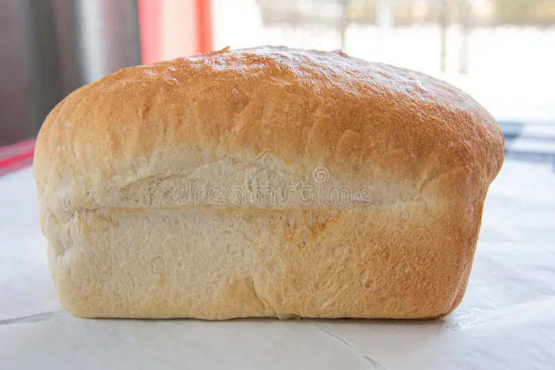
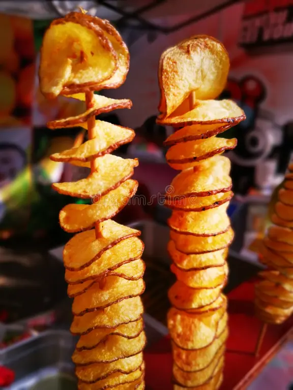

Fresh Fakumoya Bread

Fresh bread available to order or buy in store.
R12.00
Explore our kota fillings, sides and fresh bread. Prices are shown in South African rand (ZAR).
Search by item name or ingredient. Use the filters to narrow the list.
| Item | Description | Price | Category |
|---|---|---|---|
| Atchar + Polony + Chips | A classic kota with atchar, polony and chips. | R25.00 | Kotas |
| Atchar + Polony + Cheese + Chips | A kota with cheese added to the classic filling. | R28.00 | Kotas |
| Atchar + Polony + Vienna + Chips | A kota with polony, vienna and chips. | R28.00 | Kotas |
| Atchar + Polony + Cheese + Vienna + Chips | A loaded combination of cheese, vienna and chips. | R35.00 | Kotas |
| Atchar + Polony + Cheese + Egg + Chips | A kota with cheese, egg and chips. | R35.00 | Kotas |
| Atchar + Polony + Cheese + Russian + Chips | A kota with cheese, Russian sausage and chips. | R39.00 | Kotas |
| Full House (all fillings) + Chips | A generous kota with all available fillings and chips. | R48.00 | Kotas |
| Small Chips | A serving of crispy chips. | R25.00 | Extras |
| Large Chips | A larger serving of crispy chips. | R45.00 | Extras |
| Vienna | Extra vienna sausage. | R15.00 | Extras |
| Egg | Add an egg to your meal. | R5.00 | Extras |
| Cheese | Add cheese to your kota. | R5.00 | Extras |
| Russian | Extra Russian sausage. | R20.00 | Extras |
| Spiral Potato (Small) | Small spiral potato snack. | R5.00 | Extras |
| Spiral Potato (Large) | Large spiral potato snack. | R10.00 | Extras |
| Fakumoya Bread | Fresh bread available to order or buy in store. | R12.00 | Bread |
No menu items match your search. Try a different word or category.

Fresh bread available to order or buy in store.
R12.00

Choose a small or large spiral potato snack.
From R5.00
Use the enquiry form to ask about availability or bulk orders.
Make an EnquiryMonday – Sunday: 10:00 AM – 8:00 PM
Please call ahead to confirm availability before travelling.